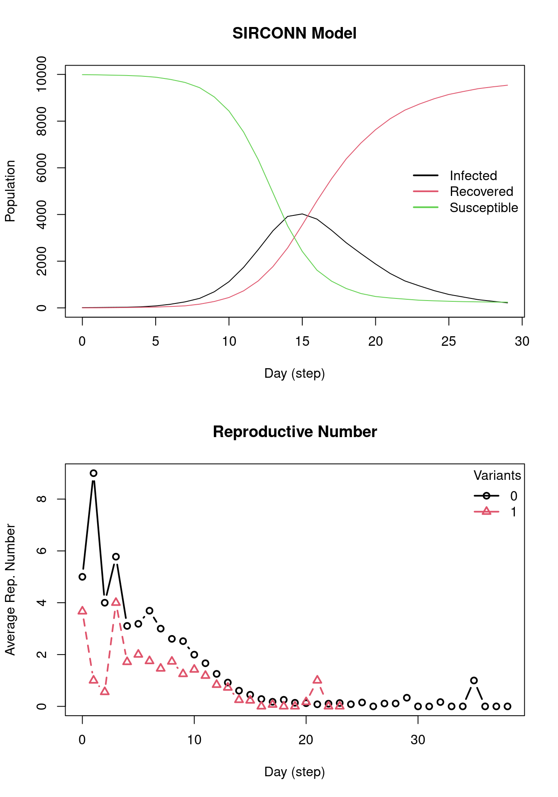

epiworldR supports multi-variant models, the below code gives instructions on how to implement this. First, build a SIRCONN model for COVID-19, which new viruses and tools will then be added to.
_________________________________________________________________________
|Running the model...
|||||||||||||||||||||||||||||||||||||||||||||||||||||||||||||||||||||||| done.
| done.
Code
model_sir
________________________________________________________________________________
SIMULATION STUDY
Name of the model : Susceptible-Infected-Removed (SIR) (connected)
Population size : 100000
Number of entities : 0
Days (duration) : 50 (of 50)
Number of variants : 1
Last run elapsed t : 1.00s
Last run speed : 4.02 million agents x day / second
Rewiring : off
Global actions:
(none)
Virus(es):
- COVID-19 (baseline prevalence: 0.01%)
Tool(s):
(none)
Model parameters:
- Contact rate : 2.0000
- Prob. Recovery : 0.3333
- Prob. Transmission : 0.5000
Distribution of the population at time 50:
- (0) Susceptible : 99990 -> 6514
- (1) Infected : 10 -> 3
- (2) Recovered : 0 -> 93483
Transition Probabilities:
- Susceptible 0.95 0.05 0.00
- Infected 0.00 0.67 0.33
- Recovered 0.00 0.00 1.00
Designing the Virus
Using the virus() function, assign a name the new virus/variant with its corresponding probability of infecting any given agent. In this example, prob_infecting = 0.3. In order to add this new virus to the model, use the add_virus() function by calling the original epiworldR model object, the new virus, and the new virus’ prevalence (which is set to 0.0001 in this example).
Code
# Building the virusflu <-virus(name ="Flu", prob_infecting = .3)# Adding the virus to the modeladd_virus(model_sir, flu, .0001)
Next, run the updated model with the new virus for 50 days, the output below describes the simulation. To confirm that the flu is included, notice the presence of “Flu” in the Virus(es) section of the output. All other output is interpretable as specified in previous sections.
Code
run(model_sir, ndays =50, seed =1912)
_________________________________________________________________________
|Running the model...
|||||||||||||||||||||||||||||||||||||||||||||||||||||||||||||||||||||||| done.
| done.
Code
model_sir
________________________________________________________________________________
SIMULATION STUDY
Name of the model : Susceptible-Infected-Removed (SIR) (connected)
Population size : 100000
Number of entities : 0
Days (duration) : 50 (of 50)
Number of variants : 2
Last run elapsed t : 1.00s
Total elapsed t : 2.00s (2 runs)
Last run speed : 3.95 million agents x day / second
Average run speed : 3.98 million agents x day / second
Rewiring : off
Global actions:
(none)
Virus(es):
- COVID-19 (baseline prevalence: 0.01%)
- Flu (baseline prevalence: 0.01%)
Tool(s):
(none)
Model parameters:
- Contact rate : 2.0000
- Prob. Recovery : 0.3333
- Prob. Transmission : 0.5000
Distribution of the population at time 50:
- (0) Susceptible : 99980 -> 6488
- (1) Infected : 20 -> 8
- (2) Recovered : 0 -> 93504
Transition Probabilities:
- Susceptible 0.95 0.05 0.00
- Infected 0.00 0.66 0.34
- Recovered 0.00 0.00 1.00
Plotting
Plotting the previous model (including the flu) yields the following. Notice the presence of two reproductive numbers plotted over time. Variant 0 refers to COVID-19 and variant 1 refers to the flu.
Now, the implementation of tools to fight any viruses and variants in the model will be demonstrated. First, for simplicity, remove the flu virus from the SIR model object (keep in mind the index for the flu virus in the model object is 1). Next, provide parameters for the new tool using the tool() function. These parameters include the tool’s name, any reduction in probabilities for the SIR model parameters, and increased probability of recovery option. To add the tool to the SIR model, use the add_tool() function with the SIR model object, new tool, and prevalence of the tool. In this example, assume that 50% of the population will have received the vaccination.
Code
# Removing the flu virus from the modelrm_virus(model_sir, 1)vaccine <-tool(name ="Vaccine",susceptibility_reduction = .9,transmission_reduction = .5,recovery_enhancer = .5, death_reduction = .9)add_tool(model_sir, vaccine, 0.5)run(model_sir, ndays =50, seed =1231)
_________________________________________________________________________
|Running the model...
|||||||||||||||||||||||||||||||||||||||||||||||||||||||||||||||||||||||| done.
| done.
Many times we want to model the effects of comorbidities on the disease. For example, we may want to model the effects of obesity on the probability of recovery from COVID-19. To do this, we can use the virus_fun_logit() function to model the probability of recovery.
The steps are the following:
Create the model
Assign the agents’ data (a matrix with covariates/features) to the model.
Create a function to model the probability of recovery using the virus_fun_logit() function.
Add the function to the virus’ recovery rate using set_prob_recovery_fun().
Run the model.
We start by creating two matching models, one with comorbidities and one without.
Next, we will create a matrix with the agents’ data. As an example, we will create a matrix with two columns, one for the baseline and one for obesity.
Code
# Artificial population with obesityset.seed(88)X <-cbind(baseline =1,obese =sample.int(2, size(model_comor), replace =TRUE) -1 )# Looking at the datahead(X)
Let’s now link agents’ data to the model. This will allow us to use the data to model the probability of recovery.
Code
# Adding the data to the modelset_agents_data(model_comor, X)model_comor
________________________________________________________________________________
SIMULATION STUDY
Name of the model : Susceptible-Exposed-Infected-Removed (SEIR) (connected)
Population size : 10000
Number of entities : 0
Days (duration) : 0 (of 0)
Number of variants : 1
Last run elapsed t : -
Rewiring : off
Global actions:
(none)
Virus(es):
- Flu (baseline prevalence: 0.10%)
Tool(s):
(none)
Model parameters:
- Avg. Incubation days : 7.0000
- Contact rate : 2.1000
- Prob. Recovery : 0.2500
- Prob. Transmission : 0.5000
We then use virus_fun_logit() to create a function we can use to model the probability of recovery. The function takes in the following arguments:
An epiworld_virus_function object.
(model: Susceptible-Exposed-Infected-Removed (SEIR) (connected))
This function was built using -virus_fun_logit()-. and it features the following coefficients:
0: -1.10
1: -1.95
The next step is to set the probability of recovery function for the virus. We can do this using the set_prob_recovery_fun() function:
Code
# Setting the probability of recoveryset_prob_recovery_fun(virus =get_virus(model_comor, 0), model = model_comor,vfun = lfun )
# We can even compute the correlationt.test(X[,2], (states_no_comor <3) - (states_comor <3) )
Welch Two Sample t-test
data: X[, 2] and (states_no_comor < 3) - (states_comor < 3)
t = 48.931, df = 18225, p-value < 2.2e-16
alternative hypothesis: true difference in means is not equal to 0
95 percent confidence interval:
0.4003917 0.4338083
sample estimates:
mean of x mean of y
0.5050 0.0879
The table above shows that the model with comorbidities has fewer recovered agents than the model without comorbidities. Furthermore, the model with no comorbidities still has susceptible agents, which is not the case for the model with comorbidities.
Exercise 1
Using a SIRCONN model to simulate the Flu for 75 days, add the Coronavirus Delta variant to the model. Then plot the model parameters and reproductive numbers over time for both viruses. Assume n = 10000, prevalence = 0.0001, contact_rate = 2.1, prob_transmission = 0.5, and prob_recovery = \(\frac{1}{4}\) for model initialization. Assume the Delta variant has a prob_infecting = 0.3, prob_recovery = \(\frac{1}{4}\), and an initial prevalence = 0.001.
After how many days does the number of infections peak in this simulation? How many infections occur at the peak?
Solution
Code
model_sir <-ModelSIRCONN(name ="Flu",n =10000, prevalence =0.0001, contact_rate =2.1,prob_transmission =0.5,prob_recovery =1/4 )# Building the virusdelta <-virus(name ="Delta", prob_infecting = .3, prob_recovery =1/4)# Adding the virus to the modeladd_virus(model_sir, delta, .001)# Run the modelrun(model_sir, ndays =75, seed =1912)
_________________________________________________________________________
Running the model...
||||||||||||||||||||||||||||||||||||||||||||||||||||||||||||||||||||||||| done.
done.
Code
# Reproductive number repnum <-get_reproductive_number(model_sir)# Plottingop <-par(mfrow =c(2,1))plot(model_sir)plot(repnum, type="b")

Code
par(op)# Day of peak infections x <-get_hist_total(model_sir)which.max(x$counts[x$state =="Infected"]) -1
[1] 15
Code
# Number of infections on peak daymax(x$counts[x$state =="Infected"])
[1] 4025
Exercise 2
Using the SIRCONN model from exercise 1 (model_sir), remove the Delta variant from the model and add a masking tool called “mask_wearing” with transmission reduction = 0.3 and proportion of complying agents = 0.6. Simulate this scenario for 50 days and plot the model parameters and average reproductive number over time.
After how many days does the number of infections peak in this simulation?
How many infections occur at the peak?
Tip
Masking only influences the transmission of a disease, thus transmission reduction = 0.3, and all other parameters of this tool will be 0.0.
Solution
Code
# Removing Delta variantrm_virus(model_sir, 1)# Creating a toolmask_wearing <-tool(name ="Mask",susceptibility_reduction =0.0,transmission_reduction =0.3, # Only transmissionrecovery_enhancer =0.0,death_reduction =0.0)# Adding tool to the modeladd_tool(model_sir, mask_wearing, 0.6)# Running the modelrun(model_sir, ndays =50, seed =1231)
_________________________________________________________________________
|Running the model...
|||||||||||||||||||||||||||||||||||||||||||||||||||||||||||||||||||||||| done.
| done.